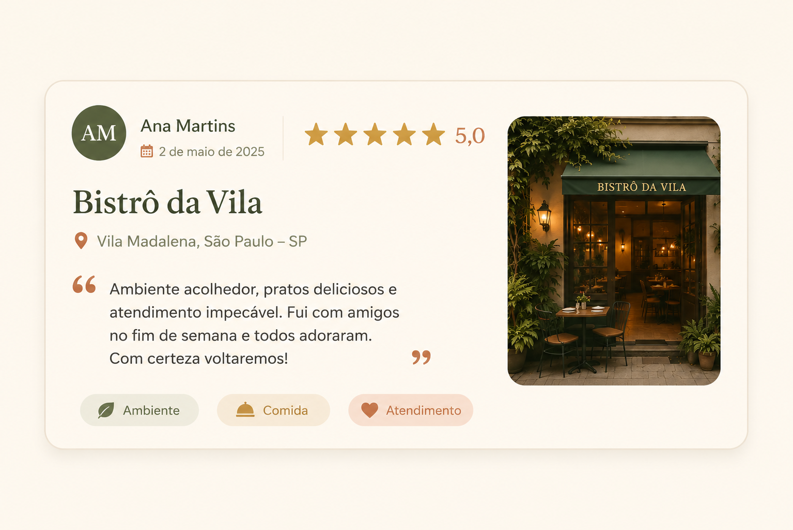

Informações dispersas
Atualmente, avaliações e recomendações estão distribuídas em diferentes plataformas, dificultando a busca por informações completas e confiáveis.
 Projeto Multidisciplinar • Plataforma Web
Projeto Multidisciplinar • Plataforma Web
A Lumine é um projeto acadêmico que propõe o desenvolvimento de uma plataforma onde usuários poderão compartilhar avaliações, registrar experiências gastronômicas e descobrir novos restaurantes por meio de recomendações da comunidade.

A Lumine nasce da ideia de criar um ambiente colaborativo para reunir avaliações e recomendações de restaurantes em uma única plataforma. O projeto busca facilitar a escolha de novos estabelecimentos, incentivando o compartilhamento de experiências entre os usuários de forma simples, organizada e confiável.
Atualmente, avaliações e recomendações estão distribuídas em diferentes plataformas, dificultando a busca por informações completas e confiáveis.
Muitas pessoas encontram dificuldades para escolher um restaurante que atenda às suas expectativas apenas com avaliações superficiais.
Falta um ambiente focado na troca de experiências gastronômicas de forma organizada e colaborativa.
A proposta da Lumine é oferecer uma plataforma intuitiva onde usuários poderão pesquisar restaurantes, compartilhar experiências e consultar recomendações feitas pela comunidade.
Os usuários poderão localizar restaurantes pelo nome, pela classificação de avaliação e/ou cadastrar o restaurante caso não seja encontrado
Após visitar um estabelecimento, será possível registrar notas, comentários e recomendações.
As avaliações da comunidade ajudarão outras pessoas a conhecerem novos restaurantes com mais confiança.
O principal objetivo da Lumine é desenvolver uma plataforma moderna e intuitiva para avaliação e recomendação de restaurantes, incentivando a colaboração entre usuários.
Reunir avaliações, comentários e recomendações em um único ambiente.
Auxiliar usuários na escolha de restaurantes através de experiências reais.
Incentivar o compartilhamento de opiniões e recomendações gastronômicas.
Desenvolver uma plataforma simples, agradável e acessível para qualquer usuário.
O desenvolvimento da Lumine utilizará tecnologias modernas voltadas para aplicações web.
Estruturação semântica das páginas do projeto.
Desenvolvimento da identidade visual e da responsividade.
Responsável pelas interações e funcionalidades da interface.
Integração planejada para obtenção de informações sobre restaurantes.
Projeto desenvolvido pela equipe responsável pela idealização, planejamento e implementação da plataforma Lumine.
Desenvolvimento Front-end
Desenvolvimento Back-end
Banco de Dados e Documentação